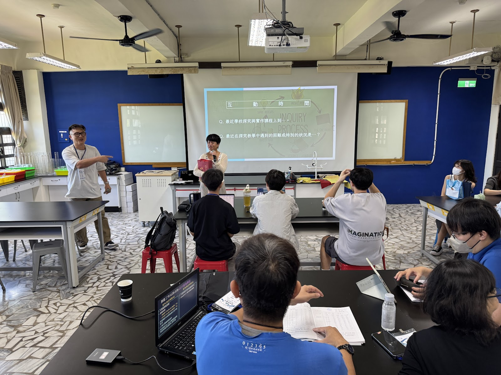
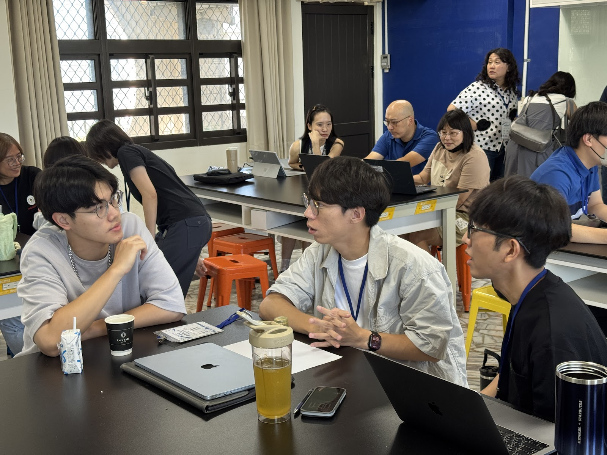
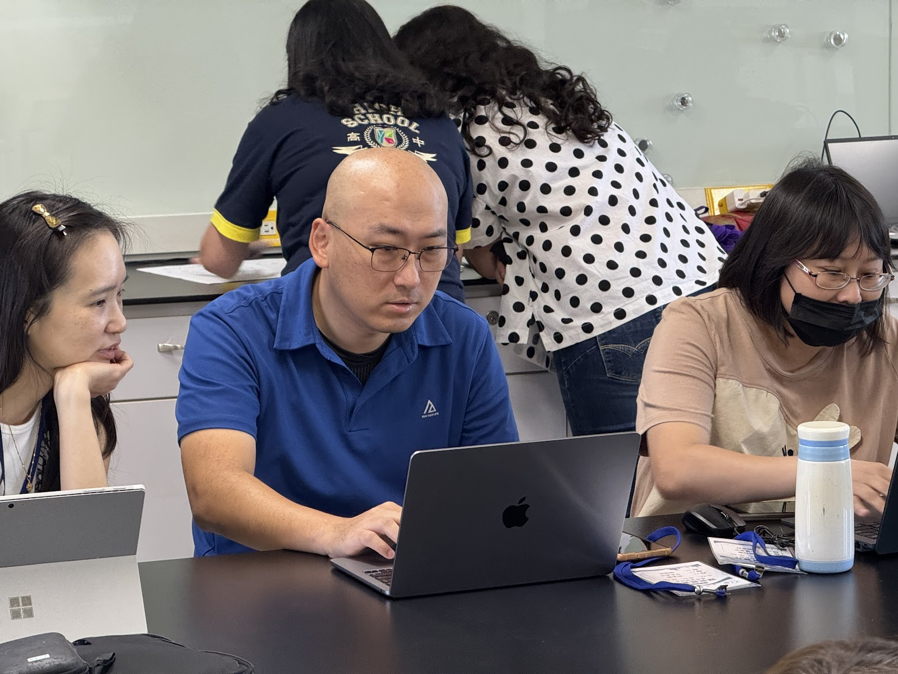

關於社群
一個從教學現場出發，
把共備變成長期協作的教育社群。
社群的存在，不只是為了辦活動，而是希望透過穩定的共備、彼此信任的對話與持續修正的歷程，支持更多教師把探究與實作真正帶進課堂。
從社群發起、邀請、盤點、共備、回饋與分工等公開整理線索可看見：社群不是先有漂亮架構才開始運作，而是在一次次真實協作中慢慢形成自己的方法。
先聽見老師已感知的需求，也透過任務與對話讓深層需求浮現。
以各校做得不錯、願意分享的課程經驗作為安全入口，再逐步深化討論。
透過固定節奏、回饋統計、講師對口與分工機制，讓社群能長期運作。
關於社群不只需要理念文字，也需要讓訪客看見共備如何發生。以下先用既有照片整理三種公開安全的情境：共備現場、同儕協作與工具實作；更完整的相簿集中放在「成果與活動」，避免關於頁過度複雜。

用全景照片交代社群如何在實體聚會中形成共同焦點，讓外部讀者更容易理解「共備」不是抽象口號。

社群價值常發生在小組桌邊：教師彼此提問、補充、試著把課程想法推進到可實作的版本。

照片呈現教師帶著材料進場、邊操作邊討論的樣貌，也呼應社群重視可試、可改、可帶回教室的工作方式。
我們期待讓探究與實作不只是少數人的嘗試，而能成為更多學校、更多班級都能逐步發展的課程文化。社群透過跨校連結與共同試作，陪伴教師把課程從想法帶到現場，再從現場帶回來修正。
我們相信，學生的探究能力來自真實情境中的提問、證據蒐集、推理修正與表達練習。因此，社群關注的不是單一成果，而是整個學習歷程如何被好好設計與支持。
從議題聚焦、案例分享到課程修訂，社群的節奏強調務實、可討論，也可回到教學現場繼續深化。
從教學現場的真實困難出發，確認本期共備最值得處理的核心議題。
透過工作坊、小組討論與跨校交流，把不同視角整理成更成熟的課程版本。
讓教師在自己的班級中試作、記錄、反思，再把經驗帶回社群進一步修正。
把活動節奏與成果累積梳理清楚，能讓社群運作更有穩定感，也方便新夥伴快速理解參與方式。
整理各校需求、確認年度方向與關鍵主題，作為後續共備的共同基礎。
透過定期活動陪伴教師修課、看課與分享，讓課程在實作中逐步定型。
彙整教案、學生作品、照片紀錄與反思筆記；其中可公開授權的部分再整理成對外展示素材，其餘保留為社群內部延續與修課線索。